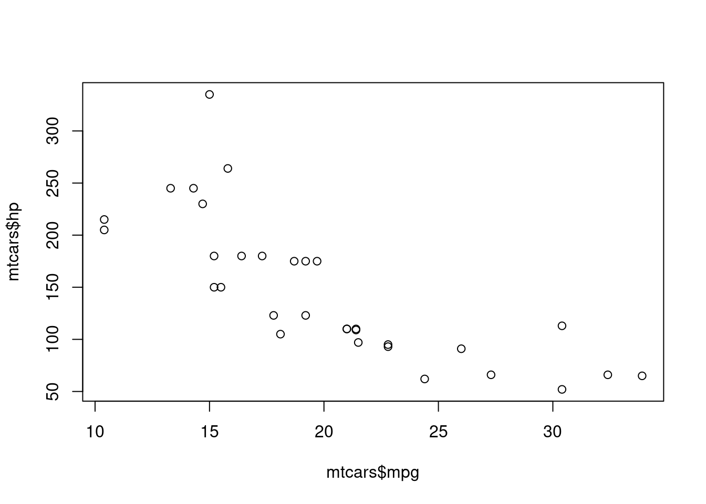
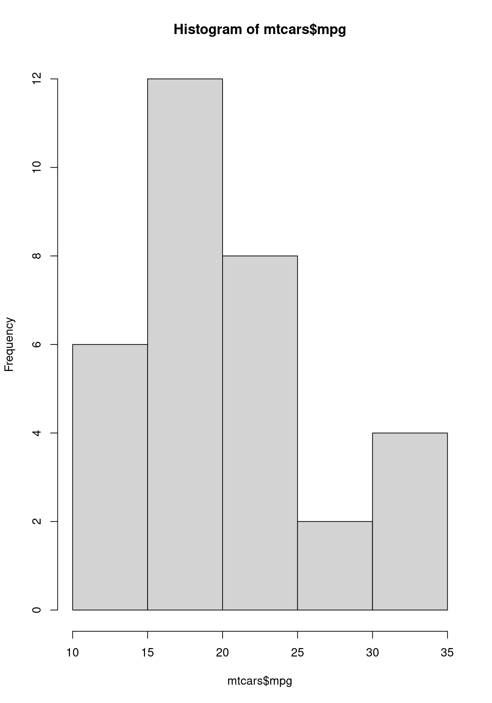

| mpg | cyl | disp | hp | drat | wt | qsec | vs | am | gear | carb | |
|---|---|---|---|---|---|---|---|---|---|---|---|
| Mazda RX4 | 21.0 | 6 | 160.0 | 110 | 3.90 | 2.620 | 16.46 | 0 | 1 | 4 | 4 |
| Mazda RX4 Wag | 21.0 | 6 | 160.0 | 110 | 3.90 | 2.875 | 17.02 | 0 | 1 | 4 | 4 |
| Datsun 710 | 22.8 | 4 | 108.0 | 93 | 3.85 | 2.320 | 18.61 | 1 | 1 | 4 | 1 |
| Hornet 4 Drive | 21.4 | 6 | 258.0 | 110 | 3.08 | 3.215 | 19.44 | 1 | 0 | 3 | 1 |
| Hornet Sportabout | 18.7 | 8 | 360.0 | 175 | 3.15 | 3.440 | 17.02 | 0 | 0 | 3 | 2 |
| Valiant | 18.1 | 6 | 225.0 | 105 | 2.76 | 3.460 | 20.22 | 1 | 0 | 3 | 1 |
| Duster 360 | 14.3 | 8 | 360.0 | 245 | 3.21 | 3.570 | 15.84 | 0 | 0 | 3 | 4 |
| Merc 240D | 24.4 | 4 | 146.7 | 62 | 3.69 | 3.190 | 20.00 | 1 | 0 | 4 | 2 |
| Merc 230 | 22.8 | 4 | 140.8 | 95 | 3.92 | 3.150 | 22.90 | 1 | 0 | 4 | 2 |
| Merc 280 | 19.2 | 6 | 167.6 | 123 | 3.92 | 3.440 | 18.30 | 1 | 0 | 4 | 4 |
| Merc 280C | 17.8 | 6 | 167.6 | 123 | 3.92 | 3.440 | 18.90 | 1 | 0 | 4 | 4 |
| Merc 450SE | 16.4 | 8 | 275.8 | 180 | 3.07 | 4.070 | 17.40 | 0 | 0 | 3 | 3 |
| Merc 450SL | 17.3 | 8 | 275.8 | 180 | 3.07 | 3.730 | 17.60 | 0 | 0 | 3 | 3 |
| Merc 450SLC | 15.2 | 8 | 275.8 | 180 | 3.07 | 3.780 | 18.00 | 0 | 0 | 3 | 3 |
| Cadillac Fleetwood | 10.4 | 8 | 472.0 | 205 | 2.93 | 5.250 | 17.98 | 0 | 0 | 3 | 4 |
| Lincoln Continental | 10.4 | 8 | 460.0 | 215 | 3.00 | 5.424 | 17.82 | 0 | 0 | 3 | 4 |
| Chrysler Imperial | 14.7 | 8 | 440.0 | 230 | 3.23 | 5.345 | 17.42 | 0 | 0 | 3 | 4 |
| Fiat 128 | 32.4 | 4 | 78.7 | 66 | 4.08 | 2.200 | 19.47 | 1 | 1 | 4 | 1 |
| Honda Civic | 30.4 | 4 | 75.7 | 52 | 4.93 | 1.615 | 18.52 | 1 | 1 | 4 | 2 |
| Toyota Corolla | 33.9 | 4 | 71.1 | 65 | 4.22 | 1.835 | 19.90 | 1 | 1 | 4 | 1 |
| Toyota Corona | 21.5 | 4 | 120.1 | 97 | 3.70 | 2.465 | 20.01 | 1 | 0 | 3 | 1 |
| Dodge Challenger | 15.5 | 8 | 318.0 | 150 | 2.76 | 3.520 | 16.87 | 0 | 0 | 3 | 2 |
| AMC Javelin | 15.2 | 8 | 304.0 | 150 | 3.15 | 3.435 | 17.30 | 0 | 0 | 3 | 2 |
| Camaro Z28 | 13.3 | 8 | 350.0 | 245 | 3.73 | 3.840 | 15.41 | 0 | 0 | 3 | 4 |
| Pontiac Firebird | 19.2 | 8 | 400.0 | 175 | 3.08 | 3.845 | 17.05 | 0 | 0 | 3 | 2 |
| Fiat X1-9 | 27.3 | 4 | 79.0 | 66 | 4.08 | 1.935 | 18.90 | 1 | 1 | 4 | 1 |
| Porsche 914-2 | 26.0 | 4 | 120.3 | 91 | 4.43 | 2.140 | 16.70 | 0 | 1 | 5 | 2 |
| Lotus Europa | 30.4 | 4 | 95.1 | 113 | 3.77 | 1.513 | 16.90 | 1 | 1 | 5 | 2 |
| Ford Pantera L | 15.8 | 8 | 351.0 | 264 | 4.22 | 3.170 | 14.50 | 0 | 1 | 5 | 4 |
| Ferrari Dino | 19.7 | 6 | 145.0 | 175 | 3.62 | 2.770 | 15.50 | 0 | 1 | 5 | 6 |
| Maserati Bora | 15.0 | 8 | 301.0 | 335 | 3.54 | 3.570 | 14.60 | 0 | 1 | 5 | 8 |
| Volvo 142E | 21.4 | 4 | 121.0 | 109 | 4.11 | 2.780 | 18.60 | 1 | 1 | 4 | 2 |
Computation
Markdown table
| City | Country |
|----------|---------|
| Mannheim | Germany |
| Paris | France |
| Tokyo | Japan || City | Country |
|---|---|
| Mannheim | Germany |
| Paris | France |
| Tokyo | Japan |
Exercise
Create a Tic Tac Toe field and play a game with yourself
| X | X | O |
|---|---|---|
| O | O | X |
| X | O | O |
Code chunks
Literate programming: mixing a document formatting language and a programming language.
Code chunks are snippets of programming language to do the “mixing”. You can insert a code chunk in a Quarto document with (at least) three backticks.
```r
x <- "Hello World!"
message(x)
```
```python
x = "Hello World!"
print(x)
```
```c
int main() {
printf("Hello World!");
return 0;
}
```Exercise
Copy and paste the R code chunk into a Quarto document and render it. Tell us what’s the output.
Computation Option 1: Executable Code chunk
The way to insert a code chink in the previous exercise does not involve code execution. Therefore, Quarto will only format the code, e.g. add syntax highlight.
To make the code executable, wrap r with a pair of curly.
```{r}
x <- "Hello World!"
message(x)
```Exercise 1
Copy and paste the R code chunk into a Quarto document and render it. Tell us what’s the output.
Exercise 2
Create a code chunk in a Quarto document to calculate the area of a circle with radius = 10 (hints: pi). Render it.
Computation Option 2: Inline R code (knitr)
Another way to invoke code execution is to use inline code: `r `
## Mathematics
I don't know the answer of 1 + 1 equals to 2.When to use inline?
For quick and dirty generation of one number in a paragraph, e.g. number of observations, calculation of mean. Otherwise, use code chunk.
Exercise 1:
Convert the above area calculation to inline R code.
Exercise 2:
Write inline R code to display the following sentence (hints: nrow):
There are 32 observations in the data frame mtcars.
Full circle
Some R functions generate Markdown code.
mtcars
knitr::kable(mtcars)Exercise
Display the content of mtcars as a table in a Quarto document like the following:
Figures
```{r}
hist(mtcars$mpg)
```Exercise
Display a scatter plot in a Quarto document like the following:

Execution Options
You can control how the code is executed with execution options
Output options (knitr)
```{r}
#| echo: false
knitr::kable(mtcars)
```There are
eval(evaluate the code chunk or not)echo(include the source code or not in the output)output(include the execution result in the output or not:true,false,asis)warning(include warnings in the output)error(include errors in the output)include(include: falsesuppresses all output, useful for reading data or loading packages)
Exercise
Read this file and make Quarto display the following:
There are 344 observations in the file penguins_raw.csv and the first few rows look like so:
| studyName | Sample.Number | Species | Region | Island | Stage | Individual.ID | Clutch.Completion | Date.Egg | Culmen.Length..mm. | Culmen.Depth..mm. | Flipper.Length..mm. | Body.Mass..g. | Sex | Delta.15.N..o.oo. | Delta.13.C..o.oo. | Comments |
|---|---|---|---|---|---|---|---|---|---|---|---|---|---|---|---|---|
| PAL0708 | 1 | Adelie Penguin (Pygoscelis adeliae) | Anvers | Torgersen | Adult, 1 Egg Stage | N1A1 | Yes | 2007-11-11 | 39.1 | 18.7 | 181 | 3750 | MALE | NA | NA | Not enough blood for isotopes. |
| PAL0708 | 2 | Adelie Penguin (Pygoscelis adeliae) | Anvers | Torgersen | Adult, 1 Egg Stage | N1A2 | Yes | 2007-11-11 | 39.5 | 17.4 | 186 | 3800 | FEMALE | 8.94956 | -24.69454 | NA |
| PAL0708 | 3 | Adelie Penguin (Pygoscelis adeliae) | Anvers | Torgersen | Adult, 1 Egg Stage | N2A1 | Yes | 2007-11-16 | 40.3 | 18.0 | 195 | 3250 | FEMALE | 8.36821 | -25.33302 | NA |
| PAL0708 | 4 | Adelie Penguin (Pygoscelis adeliae) | Anvers | Torgersen | Adult, 1 Egg Stage | N2A2 | Yes | 2007-11-16 | NA | NA | NA | NA | NA | NA | NA | Adult not sampled. |
| PAL0708 | 5 | Adelie Penguin (Pygoscelis adeliae) | Anvers | Torgersen | Adult, 1 Egg Stage | N3A1 | Yes | 2007-11-16 | 36.7 | 19.3 | 193 | 3450 | FEMALE | 8.76651 | -25.32426 | NA |
| PAL0708 | 6 | Adelie Penguin (Pygoscelis adeliae) | Anvers | Torgersen | Adult, 1 Egg Stage | N3A2 | Yes | 2007-11-16 | 39.3 | 20.6 | 190 | 3650 | MALE | 8.66496 | -25.29805 | NA |
Figure Options (knitr)
There are:
fig-widthfig-heightfig-capfig-altfig-alignfig-dpi
An example to play around
```{r}
#| fig-cap: "A random histogram"
#| fig-height: 10
#| fig-align: right
#| echo: false
hist(mtcars$mpg)
```
Best practices
Label your chunk
It does nothing apparently. You will know why it is important tomorrow. All labels must be unique.
```{r}
#| label: mtcars_listing
#| echo: false
knitr::kable(mtcars)
```(Not) cache
You can cache the computational result of a chunk (save the result as a file. When the Quarto file is being rendered again, the cached result is used instead of doing the computation again). It’s best to use it with a labeled code chunk. In general, it is not recommended for a reproducible scientific workflow. Use it unless you know what you are doing.
```{r}
#| label: mtcars_listing
#| echo: false
#| cache: true
knitr::kable(mtcars)
```Engines
R code inside a Quarto document is handled by the computational engine knitr. You might want to use another computational engine if R is not your thing. For example, Python code is handled by Jupyter. In a mix language environment, you might need reticulate.
```{python}
## This is all the Python I know
def fib(n):
a, b = 0, 1
for _ in range(n):
yield a
a, b = b, a + b
list(fib(5))
```## This is all the Python I know
def fib(n):
a, b = 0, 1
for _ in range(n):
yield a
a, b = b, a + b
list(fib(5))[0, 1, 1, 2, 3]Debrief
Q: How to display table caption?
A:
With computation
```{r}
#| echo: false
#| tbl-cap: "Just a few rows"
#| tbl-cap-location: bottom
#| label: headmtcars
knitr::kable(head(mtcars))
```| mpg | cyl | disp | hp | drat | wt | qsec | vs | am | gear | carb | |
|---|---|---|---|---|---|---|---|---|---|---|---|
| Mazda RX4 | 21.0 | 6 | 160 | 110 | 3.90 | 2.620 | 16.46 | 0 | 1 | 4 | 4 |
| Mazda RX4 Wag | 21.0 | 6 | 160 | 110 | 3.90 | 2.875 | 17.02 | 0 | 1 | 4 | 4 |
| Datsun 710 | 22.8 | 4 | 108 | 93 | 3.85 | 2.320 | 18.61 | 1 | 1 | 4 | 1 |
| Hornet 4 Drive | 21.4 | 6 | 258 | 110 | 3.08 | 3.215 | 19.44 | 1 | 0 | 3 | 1 |
| Hornet Sportabout | 18.7 | 8 | 360 | 175 | 3.15 | 3.440 | 17.02 | 0 | 0 | 3 | 2 |
| Valiant | 18.1 | 6 | 225 | 105 | 2.76 | 3.460 | 20.22 | 1 | 0 | 3 | 1 |
Without computation
| City | Country |
|----------|---------|
| Mannheim | Germany |
| Paris | France |
| Tokyo | Japan |
: List of cities
| City | Country |
|---|---|
| Mannheim | Germany |
| Paris | France |
| Tokyo | Japan |
Q: I’ve heard that the knitr::kable call is not necessary.
A: You are right. Quarto (or the rendering engine: knitr) can convert all data.frame objects to Markdown tables using the df-print document option. You will learn about document options a.k.a. YAML Front Matter in the next session.
Q: Does interactive viz work?
A: Oui.
```{r}
#| echo: false
#| fig-height: 2
#| fig-width: 5
#| label: ggplotly_demo
library(ggplot2)
library(plotly)
fig <- ggplot(mtcars, aes(wt, mpg)) + geom_point()
ggplotly(fig, height = 600, width = 1000)
```Q: Any fancy stuff I can do with the code listing?
A: Many
Showing the filename
```{r}
#| eval: false
#| filename: "whatever.R"
library(ggplot2)
library(plotly)
fig <- ggplot(mtcars, aes(wt, mpg)) + geom_point()
ggplotly(fig, height = 600, width = 1000)
```whatever.R
library(ggplot2)
library(plotly)
fig <- ggplot(mtcars, aes(wt, mpg)) + geom_point()
ggplotly(fig, height = 600, width = 1000)Code folding
```{r}
#| eval: false
#| code-fold: true
#| code-summary: "Demo ggplotly"
library(ggplot2)
library(plotly)
fig <- ggplot(mtcars, aes(wt, mpg)) + geom_point()
ggplotly(fig, height = 600, width = 1000)
```Demo ggplotly
library(ggplot2)
library(plotly)
fig <- ggplot(mtcars, aes(wt, mpg)) + geom_point()
ggplotly(fig, height = 600, width = 1000)Line-numbering
```{r}
#| eval: false
#| code-line-numbers: true
library(ggplot2)
library(plotly)
fig <- ggplot(mtcars, aes(wt, mpg)) + geom_point()
ggplotly(fig, height = 600, width = 1000)
```And many more.